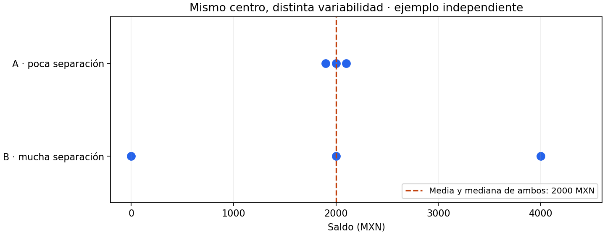
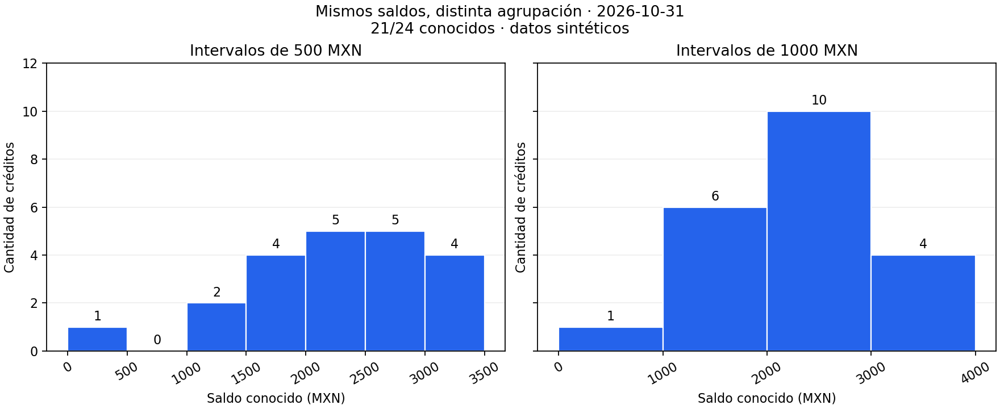
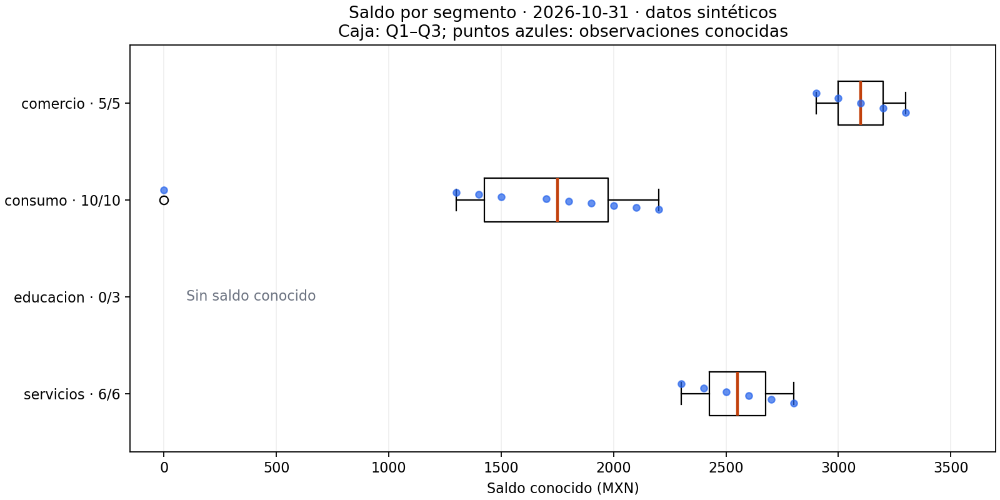
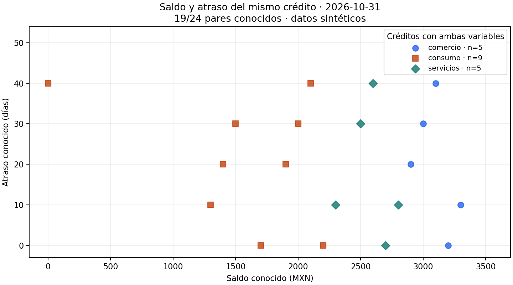

04.04 — Distribuciones y relaciones
MÓDULO 04 / 04.04
Contenido / Visualización en Python
Inicio / Módulo 04 / Lección 04.04
| Tu sesión | Qué prepararás o comprobarás |
|---|---|
| Meta | Explorar variabilidad y relaciones conservando las bases de cada figura |
| Necesitas | Pandas/Matplotlib y los CSV compartidos de SQL |
| Evidencia | Histogramas, cajas y dispersión con tablas y límites explicados |
Preparación · Material de apoyo · Ir al lab · Comprobar
Propósito
Observar la variabilidad que ocultan una suma o un promedio y explorar cómo se relacionan dos variables del mismo registro. Construiremos histogramas, diagramas de caja y gráficos de dispersión, con unidades y cobertura explícitas.
Antes de empezar
Completa 04.03 — Comparaciones y evolución y su lab. Reutiliza Figure y Axes, agrupación en pandas y selección de filas. No necesitas modelos estadísticos ni experiencia con NumPy.
Esencial: centro y dispersión, intervalos, cuartiles, bigotes, pares conocidos, valores extremos y asociación frente a causalidad. Ampliación: frecuencias relativas, densidad y comparación entre cortes. No se requiere ajustar una curva.
Qué vas a aprender
- Elegir una distribución para una variable o una dispersión para dos variables.
- Conciliar las frecuencias de un histograma con los valores conocidos.
- Explicar caja, mediana, bigotes y puntos exteriores sin llamarlos errores.
- Mantener emparejadas las variables de cada crédito al dibujar una dispersión.
- Describir patrones con sus límites, sin presentar asociación como causa.
Material de apoyo
| Recurso | Para qué sirve | Uso |
|---|---|---|
| Script de ejemplo | Preparar distribuciones y pares con controles | Para el recorrido |
| Fuentes de SQL | Consultar créditos y cortes sin alterar SQLite | Entradas compartidas |
| Histogramas de referencia | Comparar intervalos sobre los mismos saldos | Para observar |

Las figuras incluidas sirven para observar y contrastar. Abre el script cuando el recorrido lo indique para regenerar o practicar; conserva las fuentes y las entregas anteriores y utiliza los destinos de práctica indicados.
Contexto y datos del recorrido
Usaremos los CSV sintéticos originales de SQL. Hay 24 créditos y dos cortes, 48 observaciones. En esta sección seleccionamos 2026-10-31: una fila por crédito. No mezclamos los dos saldos de un crédito como si fueran créditos distintos.
El script distributions.py conserva las fuentes y la base SQLite. Lee tipos explícitos, comprueba la clave crédito/fecha y une cada corte a un único segmento. Luego crea vistas para cada pregunta:
| Vista de octubre | Base | Valores ausentes |
|---|---|---|
| Histograma de saldo | 21 saldos entre 24 créditos | 3 saldos ausentes |
| Cajas por segmento | 5, 10, 0 y 6 saldos conocidos | educacion conserva su categoría con 0/3 |
| Dispersión saldo/atraso | 19 pares entre 24 créditos | 5 créditos sin al menos una variable |
El atraso también tiene 21 valores conocidos. Los tres atrasos ausentes y los tres saldos ausentes se solapan en un crédito: la unión de ausencias contiene cinco, no seis. Cada figura usa la base que permite responder su pregunta.
flowchart LR
A[Corte: una fila por crédito] --> B[Saldo conocido]
B --> C[Histograma y cajas: 21 saldos]
A --> D[Saldo y atraso conocidos en la misma fila]
D --> E[Dispersión: 19 pares]
A --> F[Conservar excluidos y motivos]Sin renderizador: desde el mismo corte se selecciona saldo conocido para distribuciones o ambas variables conocidas para dispersión. Las exclusiones se conservan con sus motivos, aunque no tengan coordenadas para dibujarse.
1. Centro y variabilidad son preguntas distintas
Un centro resume dónde se sitúan los datos. La media suma los valores y divide entre su cantidad; la mediana ocupa el centro de la lista ordenada. Con una cantidad par, promediamos los dos centrales. La variabilidad describe cuánto se separan los valores entre sí o respecto a ese centro.

Este ejemplo independiente tiene tres valores por grupo:
- A: 1 900, 2 000 y 2 100 MXN; media y mediana 2 000; rango 200 MXN.
- B: 0, 2 000 y 4 000 MXN; media y mediana 2 000; rango 4 000 MXN.
El rango es máximo menos mínimo. Ambos centros coinciden, pero una persona que solo reciba «saldo promedio 2 000» perdería la diferencia de variabilidad. El rango depende mucho de los extremos; más adelante usaremos el intervalo central del 50 % de datos para complementar la lectura.
Antes de interpretar una distribución, pregunta: ¿qué observación entra? ¿Qué variable y unidad se representan? ¿Qué parte está ausente? ¿El resumen oculta grupos distintos? Las muestras pequeñas permiten ver cada dato; no necesitan una curva suave que sugiera precisión adicional.
2. Histograma: contar valores dentro de intervalos
Un histograma agrupa una variable numérica por intervalos. El eje horizontal contiene saldos en MXN; el vertical, cantidad de créditos conocidos dentro de cada intervalo. Cada barra representa un rango de saldos, no un segmento.
En las barras de 04.03, las categorías tenían nombres y se podían reordenar. Los intervalos de un histograma conservan su orden numérico y su anchura tiene significado. No ordenar sus barras de mayor a menor altura: perderías la ubicación de los saldos.
Para octubre elegimos bordes cada 500 MXN:
| Intervalo de saldo (MXN) | Créditos |
|---|---|
| [0, 500) | 1 |
| [500, 1 000) | 0 |
| [1 000, 1 500) | 2 |
| [1 500, 2 000) | 4 |
| [2 000, 2 500) | 5 |
| [2 500, 3 000) | 5 |
| [3 000, 3 500] | 4 |
| Total conocido | 21 |
[a, b) incluye a y excluye b. Así, 1 500 va al intervalo [1 500, 2 000), no al anterior. Matplotlib incluye el límite derecho del último intervalo. El cero observado pertenece al primero. Los tres saldos ausentes no entran en ningún intervalo ni se convierten en ceros.

La vista de 500 MXN distingue más detalles; la de 1 000 reúne más valores en cada barra y parece menos fragmentada. Los saldos no cambiaron. Pocas barras pueden esconder separaciones; demasiadas pueden hacer que una muestra pequeña parezca una colección de picos. Conviene mirar al menos dos agrupaciones y conservar los valores para comprobar la lectura.
Podemos afirmar que hay un saldo cero, ningún conocido entre 500 y 1 000 MXN, y 20 conocidos entre 1 300 y 3 300 MXN. No sabemos dónde caerían los tres ausentes. Tampoco hay evidencia suficiente para declarar una distribución «normal», varios subgrupos reales o una pauta poblacional a partir de estos intervalos y esta muestra sintética.
Dibujar y recuperar las frecuencias
Este mini ejemplo completo permite ver a qué intervalo va un valor en el borde:
import matplotlib.pyplot as plt
saldos = [0, 1300, 1500, 2000, 3500]
bordes = [0, 500, 1000, 1500, 2000, 2500, 3000, 3500]
fig, ax = plt.subplots(layout="constrained")
conteos, limites, barras = ax.hist(saldos, bins=bordes, edgecolor="white")
print(conteos.tolist()) # [1, 0, 1, 1, 1, 0, 1]
print(sum(conteos)) # 5 conocidos
ax.set_xlabel("Saldo conocido (MXN)")
ax.set_ylabel("Cantidad de créditos")
ax.set_title("Intervalos con bordes explícitos · ejemplo independiente")
fig.savefig("mini_histograma.png", dpi=160) # Usa un nombre nuevo.
plt.close(fig)bins acepta una lista de bordes, no las alturas. hist devuelve conteos, límites y objetos de barras, útiles para verificar y etiquetar la figura. El script completo exporta intervalos_500.csv e intervalos_1000.csv. La función interval_counts usa numpy.histogram y rechaza valores fuera de los bordes: un rango demasiado pequeño podría excluirlos silenciosamente de un histograma. NumPy se utiliza aquí para operaciones numéricas y está disponible como dependencia de pandas/Matplotlib; no requiere una instalación adicional.
3. Diagrama de caja: resumir el centro y la separación
Una caja permite comparar distribuciones entre grupos sin depender de bordes de histograma. Hay que conocer qué representa cada parte:
| Elemento | Significado con la configuración de este ejemplo |
|---|---|
| Q1 | Cuartil inferior, percentil 25 |
| Línea de la caja | Mediana, percentil 50 |
| Q3 | Cuartil superior, percentil 75 |
| Longitud de la caja | IQR = Q3 − Q1; separación del tramo central |
| Límites de referencia | Q1 − 1,5 × IQR y Q3 + 1,5 × IQR |
| Bigotes | Valores observados más extremos dentro de esos límites |
| Puntos fuera de bigotes | Observaciones que quedan más allá de esos bigotes |
Los bigotes no son automáticamente mínimo y máximo, ni intervalos de confianza. Sus puntas corresponden a valores observados, no necesariamente a los límites calculados. El tramo Q1–Q3 resume aproximadamente el 50 % central; con muestras pequeñas, empates e interpolación no significa que exactamente la mitad de los puntos deba caer estrictamente dentro.
Calcular antes de interpretar
Los diez saldos conocidos de consumo, ordenados, son: 0, 1 300, 1 400, 1 500, 1 700, 1 800, 1 900, 2 000, 2 100, 2 200 MXN.
Con interpolación lineal, los cuartiles son Q1 = 1 425, mediana = 1 750, Q3 = 1 975 MXN. Para entender Q1, con posiciones desde cero, su ubicación es (10 − 1) × 0,25 = 2,25: un cuarto del camino entre posiciones 2 y 3, es decir 1 400 + 0,25 × (1 500 − 1 400) = 1 425. No hace falta que un crédito tenga ese saldo. Hay otras convenciones de cuartiles; al comparar herramientas conviene documentar el método, sobre todo con pocos valores.
IQR = 550 MXN. Los límites son 600 y 2 800 MXN; los bigotes llegan a 1 300 y 2 200, los valores observados más extremos dentro de los límites. El cero queda fuera. La media 1 590 es menor que la mediana 1 750 por el efecto de ese valor bajo; no reemplazamos una por otra ni eliminamos el cero para acercarlas.

El script superpone puntos azules para conservar el detalle. Una pequeña separación vertical facilita verlos: no modifica saldos ni añade una variable. La mediana se marca en naranja. Un punto azul puede coincidir con el símbolo de un valor fuera de bigotes: sigue siendo una sola observación, no dos.
Comercio tiene mediana 3 100 e IQR 200 MXN; servicios, mediana 2 550 e IQR 250; consumo, mediana 1 750 e IQR 550. Así distinguimos nivel central y separación. Educacion conserva su etiqueta 0/3 y un mensaje, sin caja inventada. La longitud de una caja no representa número de créditos: los tamaños se leen en las fracciones. No podemos describir la distribución de educacion con sus saldos ausentes ni comparar su mediana como si fuera cero.
import matplotlib.pyplot as plt
consumo = [0, 1300, 1400, 1500, 1700, 1800, 1900, 2000, 2100, 2200]
fig, ax = plt.subplots(figsize=(8, 3), layout="constrained")
partes = ax.boxplot([consumo], orientation="horizontal", whis=1.5,
tick_labels=["consumo · 10 conocidos"], showfliers=True)
ax.set_xlabel("Saldo conocido (MXN)")
ax.set_title("Caja y bigotes: un cero observado fuera de bigotes")
fig.savefig("mini_caja.png", dpi=160)
plt.close(fig)orientation existe desde Matplotlib 3.10. whis=1.5 declara la regla de bigotes y showfliers=True conserva los puntos exteriores. tick_labels nombra los grupos. En el script completo se fijan posiciones comunes incluso cuando un grupo no tiene valores.
Un valor extremo merece revisión, no borrado automático
«Fuera de bigotes» es una clasificación dependiente de la muestra y de la regla. No equivale a error, fraude ni caso inválido. El saldo cero pertenece al crédito 004 y aparece explícitamente en la fuente. El gráfico no dice si es una liquidación, un ajuste u otro evento; habría que consultar el significado y la evidencia. La combinación saldo cero/atraso 40 también merece revisión, pero no autoriza a corregir el registro por su apariencia.
Si se confirma un error, aplica una regla documentada y conserva fuente, rechazos y conciliación, como en validación y reglas. Si el valor es válido, conservarlo es parte de describir la variabilidad. Con un solo valor o todos iguales, una caja puede colapsar; eso requiere mostrar el tamaño y los puntos, no inventar dispersión.
4. Dispersión: dos variables del mismo registro
Una dispersión coloca una variable numérica en cada eje. Aquí un punto es un crédito en octubre: saldo en MXN en horizontal y atraso en días en vertical. No es una línea temporal ni representa promedios de segmentos.

Antes de dibujar, seleccionamos las mismas filas con ambas variables:
# Fragmento: corte es el DataFrame ya filtrado a una fecha.
pares = corte.dropna(subset=["saldo_mxn", "dias_atraso"])
fig, ax = plt.subplots(layout="constrained")
ax.scatter(pares["saldo_mxn"].astype(float),
pares["dias_atraso"].astype(float), alpha=0.8)
ax.set_xlabel("Saldo conocido (MXN)")
ax.set_ylabel("Atraso conocido (días)")No quitar ausencias de cada columna por separado: sus índices y cantidades podrían diferir, o podrías emparejar el saldo de un crédito con el atraso de otro. Tampoco ordenar cada columna de manera independiente. El emparejamiento depende de la clave del registro, no de la posición tras dos transformaciones.
Se excluyen de esta vista 006, 012, 022, 023 y 024. El script exporta esos casos con indicadores de saldo/atraso ausentes. Los 19 pares son dentro de la misma fecha; no son los 19 pares entre fechas de 04.03. La cantidad coincide, pero la selección responde a otro contrato y contiene créditos distintos.
El color y la forma distinguen segmentos; no cambian coordenadas. Educacion no tiene pares de saldo/atraso y no aparece como nube: no concluir que tiene atraso cero. Si varios registros coinciden en ambas coordenadas, sus marcas se superponen: contar puntos visibles puede subestimar el número de filas. Transparencia ayuda a ver acumulación, pero no garantiza recuperar un conteo. Para muchas observaciones podríamos agrupar en celdas o usar densidades como ampliación posterior. Aquí basta conservar tabla y tamaños.
5. Leer una relación sin convertirla en una explicación causal
Recorre la nube con preguntas concretas:
- ¿Los puntos tienden a subir, bajar o no muestran una dirección clara?
- ¿La forma es aproximadamente recta, curva, agrupada o dominada por extremos?
- ¿Cambia la separación vertical según el saldo? ¿Hay huecos o superposición?
- ¿Se distinguen segmentos y bases de distinto tamaño?
- ¿Qué no puede verse por ausencias, selección o agregación?
Una dirección positiva significa que valores mayores de X tienden a acompañarse de valores mayores de Y; negativa, de valores menores de Y. «Tienden» permite separación entre puntos: no exige que cada incremento de X aumente Y. Una nube sin dirección lineal clara todavía puede tener una forma curva o grupos que merecen examinarse. Ninguna dirección decide por sí sola qué variable explica a la otra.
En esta muestra, los atrasos se repiten en bandas de 0, 10, 20, 30 y 40 días porque los datos se construyeron así. Se observan distintos atrasos en saldos próximos; no hay un aumento estricto del atraso con cada incremento del saldo. No afirmamos que el saldo cause atraso ni que se pueda predecir con esta nube. La escala discreta y el origen sintético también limitan la interpretación.
Una asociación puede deberse a otras variables, selección de casos, diferencias entre grupos o una relación en sentido inverso. Un coeficiente de correlación resume principalmente asociación lineal y no reemplaza mirar la nube: puede ocultar curvas, grupos y puntos influyentes. No necesitamos calcularlo para completar esta sección. Ninguno de estos gráficos demuestra causalidad.
Los promedios por segmento tampoco describen todas las relaciones individuales: agregar elimina información. No conectar los puntos con plot para «ver una tendencia»: el orden de las filas no es un recorrido temporal ni una relación causal. Una línea de ajuste requeriría otro objetivo y supuestos explícitos.
6. Reconstruir, exportar y comprobar
Utiliza el entorno elegido en 00.05. Referencias del proyecto: pandas 2.3.3 y Matplotlib 3.10.7. Los ejemplos se comprobaron con pandas 2.3.3 y Matplotlib 3.10.6 locales. No se modificaron dependencias ni el entorno global. Usa un gestor, con el entorno ya activado.
Desde la raíz del repositorio, elige un recorrido. --output exige carpeta nueva y --cut selecciona fecha; no reinicia ni escribe la base SQLite.
PowerShell
# Conda o venv/pip previamente activado:
python curriculum/04_visualization_python/04_distributions_relationships/distributions.py --cut 2026-10-31 --output curriculum/04_visualization_python/04_distributions_relationships/output/octubre
# Alternativa si elegiste uv: ejecutar en lugar del comando anterior.
uv run --locked python curriculum/04_visualization_python/04_distributions_relationships/distributions.py --cut 2026-10-31 --output curriculum/04_visualization_python/04_distributions_relationships/output/octubreBash/Zsh
# Conda o venv/pip previamente activado:
python curriculum/04_visualization_python/04_distributions_relationships/distributions.py --cut 2026-10-31 --output curriculum/04_visualization_python/04_distributions_relationships/output/octubre
# Alternativa para uv: ejecutar en lugar del comando anterior.
uv run --locked python curriculum/04_visualization_python/04_distributions_relationships/distributions.py --cut 2026-10-31 --output curriculum/04_visualization_python/04_distributions_relationships/output/octubreSe generan cuatro PNG: histogramas, cajas, dispersion y mismo_centro. Siete CSV permiten comprobar el corte, saldos, pares, excluidos, dos agrupaciones de intervalos y resumen de cajas. El último PNG es el ejemplo independiente de seis valores descrito arriba, no una transformación de la cartera.
Agg genera imágenes sin ventanas; cada Figure se guarda y cierra. Las salidas no sustituyen las fuentes. Si falla una exportación, revisa su carpeta antes de repetir y usa otra nueva. Para una fecha sin registros se producen mensajes de ausencia y tablas vacías; eso no es evidencia de una cartera con saldo cero.
Comprueba 24 filas de corte = 19 pares + 5 excluidos. Las frecuencias suman 21, no 24 ni 19. Revisa cuartiles y bigotes de consumo en resumen_cajas.csv. Finalmente abre los PNG al tamaño de lectura y coteja coordenadas, unidades, tamaños, leyenda y etiquetas con las tablas.
7. Ampliación: conteo, proporción y densidad
Con grupos de tamaños distintos, más altura puede significar más observaciones, no mayor concentración relativa. Una frecuencia relativa divide el conteo de cada intervalo entre el total conocido de la muestra. En [2 000, 2 500), 5/21 ≈ 23,81 % de los saldos conocidos de octubre; no 5/24 ni porcentaje de MXN.
density=True tiene otro significado: altura = conteo / (total × anchura). Con intervalo de 500 MXN, la altura sería 5 / (21 × 500) ≈ 0,000476 por MXN. El área, altura por anchura, da la proporción 5/21. Las alturas no son porcentajes y no necesariamente suman uno. Con anchuras desiguales, un histograma de conteos puede confundir la lectura de áreas: usa intervalos iguales en esta práctica; una vista de densidad exige explicar la unidad.
Si comparas septiembre con octubre, usa los mismos bordes, unidades y medida vertical; declara las coberturas. Incluso con 21 saldos por fecha, no son todos los mismos créditos, como vimos en 04.03. Esta ampliación describe distribuciones disponibles; no estima automáticamente cambios individuales.
Práctica
Realiza el lab 04.04 para explicar una distribución y una relación desde sus tablas.
Evidencia y criterio de salida
| Conserva | Comprueba | Explica |
|---|---|---|
| Código, tablas y figuras de tu práctica | Frecuencias, cuartiles, pares y cobertura | Qué muestran un histograma, una caja y una dispersión |
| Interpretación y exclusiones | Los puntos conservan las variables del mismo registro | Por qué un valor exterior puede ser válido y asociación no implica causa |
Puedes avanzar cuando expliques al menos un histograma, una caja y una dispersión desde sus tablas: unidad, base, centro/variabilidad o relación, ausencias y límites. Conserva un valor exterior válido y justifica por qué las variables de dispersión permanecen emparejadas.
Quien aprende realiza y explica la práctica; su compañero revisa. Tu compañero señala un punto exterior y pide rastrearlo a su registro sin eliminarlo automáticamente. Guarda evidencia, ayudas y dudas en una nota personal junto a tu práctica. PROGRESS.md conserva el desarrollo editorial; disponer del material no acredita por sí solo aprendizaje completado.
No hay proyecto ni checkpoint implementado asociado a esta lección.
Referencias
Código, muestras explicativas y figuras propios de DS Track. Las decisiones se contrastaron con estas fuentes primarias; no se copiaron capítulos ni figuras. Las páginas stable pueden mostrar versiones posteriores a las declaradas.
- Matplotlib: hist, para bordes, frecuencias y densidad.
- Matplotlib 3.10.7: boxplot, para orientación, bigotes y puntos exteriores.
- Matplotlib: scatter, para coordenadas y marcas.
- Claus O. Wilke: histogramas y densidades y asociaciones, capítulos del libro abierto Fundamentals of Data Visualization.
Siguiente paso
Después de la práctica y su comprobación, continúa con 04.05 — Escalas, etiquetas y accesibilidad.